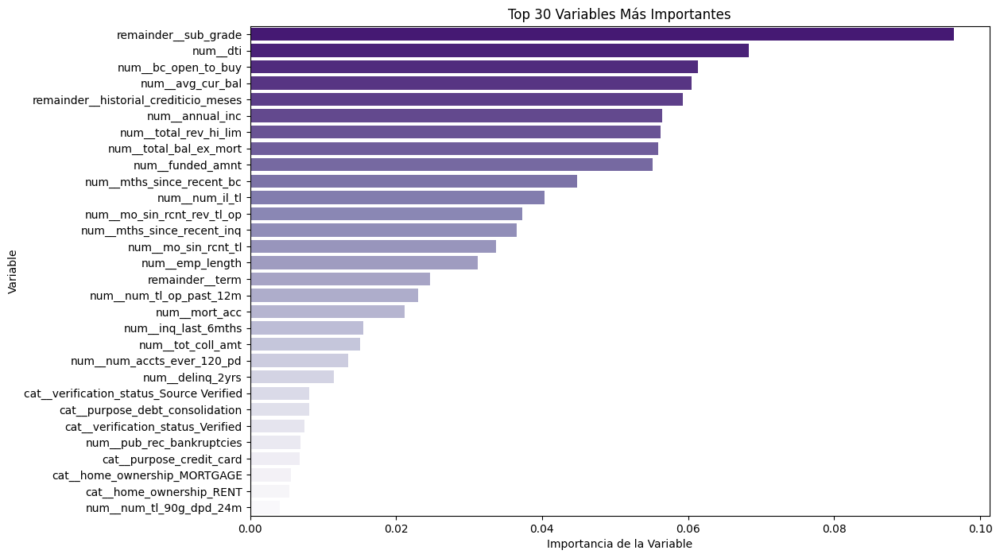
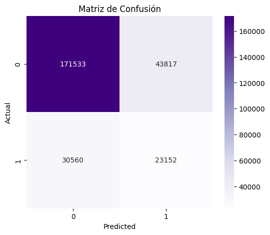
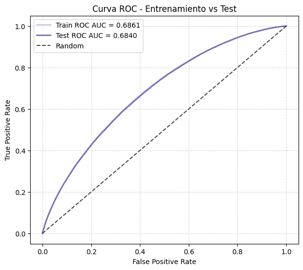
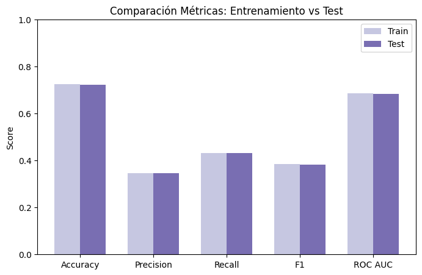
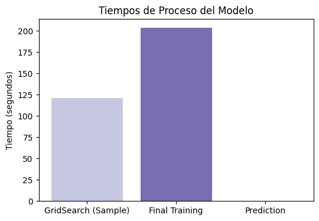
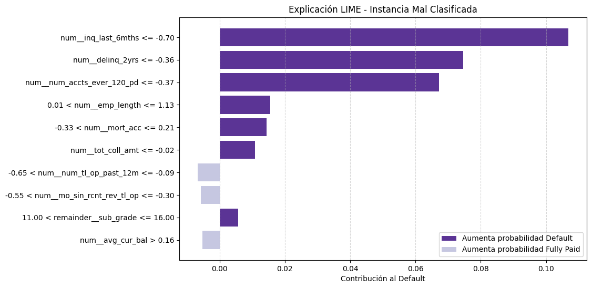

import pandas as pd
import numpy as np
from sklearn.model_selection import train_test_split
import matplotlib.pyplot as plt
import seaborn as sns
from sklearn.compose import ColumnTransformer
from sklearn.preprocessing import StandardScaler, OneHotEncoder
from sklearn.model_selection import GridSearchCV, train_test_split, cross_val_score
from sklearn.neural_network import MLPClassifier
from sklearn.metrics import accuracy_score, precision_score, recall_score, f1_score, roc_auc_score, confusion_matrix, make_scorer, roc_curve
import time
from imblearn.ensemble import BalancedRandomForestClassifier
from imblearn.over_sampling import SMOTE
from collections import Counter
import warnings
warnings.filterwarnings("ignore", category=FutureWarning)
warnings.filterwarnings("ignore", category=UserWarning)
Scikit-learn#
df_final = pd.read_csv('data/df_final.csv')
Preprocesamiento#
categorical_cols = df_final.select_dtypes(include=['object']).columns
print(categorical_cols)
Index(['term', 'sub_grade', 'home_ownership', 'verification_status', 'issue_d',
'purpose', 'earliest_cr_line', 'application_type'],
dtype='object')
df_final[['term', 'sub_grade', 'home_ownership', 'verification_status', 'issue_d',
'purpose', 'earliest_cr_line', 'application_type']].head(10)
| term | sub_grade | home_ownership | verification_status | issue_d | purpose | earliest_cr_line | application_type | |
|---|---|---|---|---|---|---|---|---|
| 0 | 36 months | C4 | MORTGAGE | Not Verified | Dec-2015 | debt_consolidation | Aug-2003 | Individual |
| 1 | 36 months | C1 | MORTGAGE | Not Verified | Dec-2015 | small_business | Dec-1999 | Individual |
| 2 | 60 months | B4 | MORTGAGE | Not Verified | Dec-2015 | home_improvement | Aug-2000 | Joint App |
| 3 | 60 months | F1 | MORTGAGE | Source Verified | Dec-2015 | major_purchase | Jun-1998 | Individual |
| 4 | 36 months | C3 | RENT | Source Verified | Dec-2015 | debt_consolidation | Oct-1987 | Individual |
| 5 | 36 months | B2 | MORTGAGE | Not Verified | Dec-2015 | debt_consolidation | Jun-1990 | Individual |
| 6 | 36 months | B1 | MORTGAGE | Not Verified | Dec-2015 | major_purchase | Feb-1999 | Individual |
| 7 | 36 months | A2 | RENT | Not Verified | Dec-2015 | credit_card | Apr-2002 | Individual |
| 8 | 36 months | B5 | MORTGAGE | Not Verified | Dec-2015 | credit_card | Nov-1994 | Individual |
| 9 | 36 months | C2 | MORTGAGE | Not Verified | Dec-2015 | other | Jun-1996 | Individual |
Conversiones manuales#
Variable:
term
# Eliminar la palabra "months" y espacios, dejando solo el número
df_final['term'] = df_final['term'].str.replace(' months', '', regex=False)
# Convertir a float
df_final['term'] = df_final['term'].astype(float)
print(df_final['term'].unique())
print(df_final['term'].dtype)
[36. 60.]
float64
Variable:
subgrade
# Obtener la lista de valores únicos de 'sub_grade' y ordenarla
sorted_sub_grades = sorted(df_final['sub_grade'].unique())
# Crear un diccionario de mapeo
sub_grade_mapping = {sub_grade: i for i, sub_grade in enumerate(sorted_sub_grades)}
# Aplicar el mapeo a la columna 'sub_grade'
df_final['sub_grade'] = df_final['sub_grade'].map(sub_grade_mapping)
# Verificar el resultado y el tipo de dato
print("Valores únicos en la columna 'sub_grade' después del mapeo:")
print(df_final['sub_grade'].value_counts())
print("\nTipo de dato de la columna 'sub_grade':", df_final['sub_grade'].dtype)
Valores únicos en la columna 'sub_grade' después del mapeo:
sub_grade
10 85494
8 83199
9 82538
7 81827
11 79213
12 74998
13 74421
6 74024
5 71153
14 67560
4 64003
3 52235
15 51321
16 44848
0 43678
17 39317
2 37996
1 37178
18 35566
19 29901
20 23749
21 21377
22 18387
23 15720
24 14417
25 9970
26 7198
27 6088
28 4859
29 3943
30 2997
31 2131
32 1614
33 1280
34 1110
Name: count, dtype: int64
Tipo de dato de la columna 'sub_grade': int64
Variable:
earliest_cr_line
# 1. Convertir 'earliest_cr_line' y 'issue_d' a formato de fecha y hora
df_final['earliest_cr_line'] = pd.to_datetime(df_final['earliest_cr_line'], format='%b-%Y')
df_final['issue_d'] = pd.to_datetime(df_final['issue_d'], format='%b-%Y')
# 2. Calcular la antigüedad del historial crediticio en meses
df_final['historial_crediticio_meses'] = (
(df_final['issue_d'].dt.year - df_final['earliest_cr_line'].dt.year) * 12 +
(df_final['issue_d'].dt.month - df_final['earliest_cr_line'].dt.month)
)
df_final = df_final.drop(columns=['earliest_cr_line', 'issue_d'])
# 4. Verificando
print("Variable 'historial_crediticio_meses' creada:")
print(df_final['historial_crediticio_meses'].head())
print("\nTipo de dato de la nueva columna:", df_final['historial_crediticio_meses'].dtype)
Variable 'historial_crediticio_meses' creada:
0 148
1 192
2 184
3 210
4 338
Name: historial_crediticio_meses, dtype: int32
Tipo de dato de la nueva columna: int32
Codificación y escalado#
# 1. Separar las variables predictoras (X) y la variable objetivo (y)
X = df_final.drop(columns=['default'])
y = df_final['default']
cols_to_exclude = ['term', 'sub_grade', 'historial_crediticio_meses']
numeric_features = [col for col in X.select_dtypes(include=['int64', 'float64']).columns if col not in cols_to_exclude]
categorical_features = [col for col in X.select_dtypes(include=['object']).columns if col not in cols_to_exclude]
# 2. Crear un ColumnTransformer para aplicar las transformaciones
preprocessor = ColumnTransformer(
transformers=[
('num', StandardScaler(), numeric_features),
('cat', OneHotEncoder(handle_unknown='ignore', drop='first'), categorical_features)
],
remainder='passthrough'
)
X_processed = preprocessor.fit_transform(X)
print("Las variables han sido escaladas y codificadas.")
print("\nForma del DataFrame procesado (filas, columnas):", X_processed.shape)
Las variables han sido escaladas y codificadas.
Forma del DataFrame procesado (filas, columnas): (1345310, 52)
Variables relevantes#
Dado el fuerte desbalance de clases en el conjunto de datos, donde aproximadamente el 80% de los préstamos corresponden a la clase 0 (pagados) y solo el 20% a la clase 1 (default), se optó por utilizar el modelo BalancedRandomForestClassifier en lugar de un Random Forest estándar. Esta variante ajusta el muestreo en cada iteración del entrenamiento para equilibrar la representación de ambas clases, lo que permite al modelo aprender mejor los patrones asociados a los casos de incumplimiento. De esta forma, se mitiga el sesgo hacia la clase mayoritaria y se mejora la capacidad predictiva frente a los préstamos que presentan mayor riesgo.
X = X_processed
# y es la variable objetivo
y = df_final['default']
# 2. Entrenar un modelo de Random Forest
model = BalancedRandomForestClassifier(n_estimators=100, random_state=42)
model.fit(X, y)
# 3. Obtener los nombres de las columnas procesadas para la visualización
feature_names = preprocessor.get_feature_names_out()
# 4. Obtener y mostrar la importancia de las variables
feature_importances = pd.Series(model.feature_importances_, index=feature_names)
feature_importances = feature_importances.sort_values(ascending=False)
print("--- Importancia de las variables (ordenadas) ---")
print(feature_importances)
# Opcional: Visualizar las 20 variables más importantes
top_30_features = feature_importances.head(30)
plt.figure(figsize=(12, 8))
sns.barplot(x=top_30_features.values, y=top_30_features.index, palette= "Purples_r")
plt.title('Top 30 Variables Más Importantes')
plt.xlabel('Importancia de la Variable')
plt.ylabel('Variable')
plt.show()
--- Importancia de las variables (ordenadas) ---
remainder__sub_grade 0.096431
num__dti 0.068316
num__bc_open_to_buy 0.061365
num__avg_cur_bal 0.060523
remainder__historial_crediticio_meses 0.059315
num__annual_inc 0.056434
num__total_rev_hi_lim 0.056273
num__total_bal_ex_mort 0.055946
num__funded_amnt 0.055177
num__mths_since_recent_bc 0.044781
num__num_il_tl 0.040374
num__mo_sin_rcnt_rev_tl_op 0.037286
num__mths_since_recent_inq 0.036476
num__mo_sin_rcnt_tl 0.033700
num__emp_length 0.031185
remainder__term 0.024661
num__num_tl_op_past_12m 0.022994
num__mort_acc 0.021197
num__inq_last_6mths 0.015495
num__tot_coll_amt 0.015100
num__num_accts_ever_120_pd 0.013461
num__delinq_2yrs 0.011484
cat__verification_status_Source Verified 0.008148
cat__purpose_debt_consolidation 0.008112
cat__verification_status_Verified 0.007496
num__pub_rec_bankruptcies 0.006904
cat__purpose_credit_card 0.006767
cat__home_ownership_MORTGAGE 0.005618
cat__home_ownership_RENT 0.005358
num__num_tl_90g_dpd_24m 0.004055
cat__home_ownership_OWN 0.004048
cat__purpose_other 0.003897
cat__purpose_home_improvement 0.003782
num__tax_liens 0.003691
cat__purpose_major_purchase 0.002013
cat__application_type_Joint App 0.001989
num__collections_12_mths_ex_med 0.001758
cat__purpose_small_business 0.001721
cat__purpose_medical 0.001435
cat__purpose_moving 0.000914
num__chargeoff_within_12_mths 0.000865
cat__purpose_vacation 0.000856
cat__purpose_house 0.000724
num__delinq_amnt 0.000503
num__acc_now_delinq 0.000457
num__num_tl_30dpd 0.000306
cat__purpose_wedding 0.000293
cat__purpose_renewable_energy 0.000143
num__num_tl_120dpd_2m 0.000069
cat__purpose_educational 0.000068
cat__home_ownership_OTHER 0.000030
cat__home_ownership_NONE 0.000006
dtype: float64

# Definir un umbral de importancia.
umbral_importancia = 0.01
variables_relevantes_seleccionadas = feature_importances[
feature_importances > umbral_importancia
].index.tolist()
print("Variables seleccionadas con importancia > 0.01:")
print(variables_relevantes_seleccionadas)
Variables seleccionadas con importancia > 0.01:
['remainder__sub_grade', 'num__dti', 'num__bc_open_to_buy', 'num__avg_cur_bal', 'remainder__historial_crediticio_meses', 'num__annual_inc', 'num__total_rev_hi_lim', 'num__total_bal_ex_mort', 'num__funded_amnt', 'num__mths_since_recent_bc', 'num__num_il_tl', 'num__mo_sin_rcnt_rev_tl_op', 'num__mths_since_recent_inq', 'num__mo_sin_rcnt_tl', 'num__emp_length', 'remainder__term', 'num__num_tl_op_past_12m', 'num__mort_acc', 'num__inq_last_6mths', 'num__tot_coll_amt', 'num__num_accts_ever_120_pd', 'num__delinq_2yrs']
Luego de aplicar un modelo de Random Forest y seleccionar variables con importancia superior a 0.01, se identificó un conjunto robusto de variables que resultan altamente informativas para predecir el riesgo de impago. Estas variables tienen un sentido lógico y práctico, ya que representan aspectos clave del perfil financiero y comportamiento crediticio de los prestatarios.
Las variables fueron las siguientes:
Indicadores de riesgo fundamentales:
remainder__sub_grade: El sub-grado del préstamo refleja directamente el riesgo percibido del prestatario.num__dti: La relación deuda-ingreso indica la capacidad del prestatario para asumir nueva deuda.num__inq_last_6mths: Consultas de crédito recientes pueden señalar un aumento en el riesgo de endeudamiento.
Historial crediticio y estabilidad:
remainder__historial_crediticio_meses: La duración del historial crediticio indica estabilidad financiera.num__num_accts_ever_120_pd,num__tot_coll_amt,num__delinq_2yrs: Reflejan el historial de morosidad y cobros, predictores fuertes del riesgo futuro.num__emp_length: La antigüedad laboral sugiere estabilidad de ingresos.
Salud financiera y liquidez:
num__bc_open_to_buyynum__total_rev_hi_lim: Cantidad de crédito disponible, esencial para evaluar la liquidez y capacidad de pago.num__annual_inc: Ingresos anuales como base de capacidad de pago.num__funded_amnt: Tamaño del préstamo, que impacta directamente el riesgo.
Otras métricas relevantes:
Variables como
num__avg_cur_bal,num__total_bal_ex_mort,num__mths_since_recent_bc,num__num_il_tl,num__mo_sin_rcnt_rev_tl_op,num__mths_since_recent_inq,num__mo_sin_rcnt_tl,num__num_tl_op_past_12m,num__mort_accyremainder__termaportan información complementaria sobre la exposición crediticia, comportamiento reciente y estructura de la deuda.
En conjunto, este grupo de variables forma una base sólida y coherente para construir modelos de predicción de riesgo de impago, reflejando tanto la capacidad de pago como el comportamiento financiero histórico y actual del prestatario.
# 1. Obtener los nombres de las columnas procesadas
feature_names = preprocessor.get_feature_names_out()
# 2. Convertir a DataFrame
X_df = pd.DataFrame(X_processed, columns=feature_names)
# 3. Filtrar solo las variables importantes según tu umbral
variables_relevantes_seleccionadas = feature_importances[feature_importances > 0.01].index.tolist()
X_selected = X_df[variables_relevantes_seleccionadas]
# 4. Agregar la variable objetivo
X_selected['default'] = y.values # Alinea índices
# 5. Guardar el DataFrame
df_final_selected = X_selected
# Revisar
print(df_final_selected.head())
remainder__sub_grade num__dti num__bc_open_to_buy num__avg_cur_bal \
0 13.0 -1.108755 -0.560512 0.471897
1 10.0 -0.199167 3.184085 -0.216576
2 8.0 -0.672332 -0.478671 1.157105
3 25.0 0.635145 -0.357007 0.907716
4 12.0 -0.724308 -0.604524 -0.666832
remainder__historial_crediticio_meses num__annual_inc \
0 148.0 -0.303863
1 192.0 -0.160853
2 184.0 -0.189455
3 210.0 0.403080
4 338.0 -0.604184
num__total_rev_hi_lim num__total_bal_ex_mort num__funded_amnt \
0 -0.644679 -0.883567 -1.240837
1 2.221532 -0.207797 1.180800
2 -0.513253 -0.650352 0.641383
3 0.046008 0.991140 -0.460404
4 -0.544013 -0.775968 -0.282512
num__mths_since_recent_bc ... num__mo_sin_rcnt_tl num__emp_length \
0 -0.641871 ... -0.552347 1.125714
1 -0.708271 ... -0.669582 1.125714
2 2.578523 ... 0.737236 1.125714
3 -0.641871 ... -0.435112 -0.828585
4 0.420527 ... 2.847462 -0.549399
remainder__term num__num_tl_op_past_12m num__mort_acc \
0 36.0 0.461531 -0.328723
1 36.0 -0.094469 1.195005
2 60.0 -1.206469 1.702915
3 60.0 1.017531 2.210824
4 36.0 -1.206469 -0.836633
num__inq_last_6mths num__tot_coll_amt num__num_accts_ever_120_pd \
0 0.367807 0.044987 1.169148
1 3.566874 -0.021965 -0.373260
2 -0.698549 -0.021965 -0.373260
3 2.500519 -0.021965 -0.373260
4 -0.698549 -0.021965 -0.373260
num__delinq_2yrs default
0 -0.361956 0.0
1 0.777007 0.0
2 -0.361956 0.0
3 0.777007 0.0
4 -0.361956 0.0
[5 rows x 23 columns]
C:\Users\David\AppData\Local\Temp\ipykernel_7640\1741641523.py:12: SettingWithCopyWarning:
A value is trying to be set on a copy of a slice from a DataFrame.
Try using .loc[row_indexer,col_indexer] = value instead
See the caveats in the documentation: https://pandas.pydata.org/pandas-docs/stable/user_guide/indexing.html#returning-a-view-versus-a-copy
X_selected['default'] = y.values # Alinea índices
División del dataset#
El desbalance de clases del dataset se abordó mediante SMOTE, una técnica de oversampling aplicada exclusivamente al conjunto de entrenamiento. Esto neutraliza el sesgo del modelo hacia la clase mayoritaria (no-default), permitiéndole aprender los patrones subyacentes de la clase minoritaria (default).
Para optimizar la búsqueda de hiperparámetros, se utilizó una muestra estratificada del 10% del conjunto de entrenamiento balanceado. Esta estrategia reduce significativamente los costos computacionales del GridSearchCV mientras se preserva la representatividad de la distribución de clases, asegurando que los hiperparámetros óptimos sean válidos para el conjunto de datos completo.
X = df_final_selected.drop(columns=['default'])
y = df_final_selected['default']
# División en conjuntos de entrenamiento y prueba (80/20)
X_train, X_test, y_train, y_test = train_test_split(
X,
y,
test_size=0.2,
stratify=y,
random_state=42
)
print("Proporción antes de SMOTE:", Counter(y_train))
# Aplicar SMOTE solo al conjunto de entrenamiento
sm = SMOTE(random_state=42)
X_train_res, y_train_res = sm.fit_resample(X_train, y_train)
print("Proporción después de SMOTE:", Counter(y_train_res))
sample_size = 0.1
X_sample, _, y_sample, _ = train_test_split(
X_train_res,
y_train_res,
train_size=sample_size,
stratify=y_train_res,
random_state=42
)
print("\nDimensiones de los datos originales después de SMOTE:")
print(f"Entrenamiento (X_train_res, y_train_res): {X_train_res.shape}")
print(f"Prueba (X_test, y_test): {X_test.shape}")
print("\nProporción en el conjunto de entrenamiento (SMOTE):")
print(y_train_res.value_counts(normalize=True))
print("\nProporción en el conjunto de prueba (original):")
print(y_test.value_counts(normalize=True))
print("\n--- Verificación de la MUESTRA para Grid Search ---")
print(f"Dimensiones de la muestra (X_sample, y_sample): {X_sample.shape}")
print("Proporción en la MUESTRA:")
print(y_sample.value_counts(normalize=True))
Proporción antes de SMOTE: Counter({0.0: 861401, 1.0: 214847})
Proporción después de SMOTE: Counter({1.0: 861401, 0.0: 861401})
Dimensiones de los datos originales después de SMOTE:
Entrenamiento (X_train_res, y_train_res): (1722802, 22)
Prueba (X_test, y_test): (269062, 22)
Proporción en el conjunto de entrenamiento (SMOTE):
default
1.0 0.5
0.0 0.5
Name: proportion, dtype: float64
Proporción en el conjunto de prueba (original):
default
0.0 0.800373
1.0 0.199627
Name: proportion, dtype: float64
--- Verificación de la MUESTRA para Grid Search ---
Dimensiones de la muestra (X_sample, y_sample): (172280, 22)
Proporción en la MUESTRA:
default
0.0 0.5
1.0 0.5
Name: proportion, dtype: float64
Modelado#
# 2. Definir modelo y GridSearchCV
mlp = MLPClassifier(random_state=42, early_stopping=True, verbose=True)
param_grid = {
'hidden_layer_sizes': [(50,), (100,), (50, 50), (100, 50)],
'alpha': [0.0001, 0.001, 0.01, 0.1],
'max_iter': [300, 500, 1000]
}
grid_search = GridSearchCV(
estimator=mlp,
param_grid=param_grid,
scoring='recall',
cv=3,
n_jobs=-1,
verbose=2,
return_train_score=True
)
# 3. Entrenar y medir tiempo de la búsqueda de hiperparámetros en la muestra
print("\n--- Iniciando Búsqueda de Hiperparámetros con GridSearchCV en la muestra ---")
start_time_grid = time.time()
grid_search.fit(X_sample, y_sample)
training_time_grid = time.time() - start_time_grid
print(f"\nTiempo de búsqueda de hiperparámetros: {training_time_grid:.2f} segundos")
# Obtener los mejores hiperparámetros de la búsqueda en la muestra
best_params = grid_search.best_params_
print("\nMejores hiperparámetros encontrados en la muestra:")
print(best_params)
# 4. Entrenar el modelo final con los mejores hiperparámetros y el conjunto de datos completo
print("\n--- Entrenando el modelo final en el conjunto de datos completo ---")
best_model = MLPClassifier(random_state=42, **best_params, early_stopping=True, verbose=True)
start_time_final = time.time()
best_model.fit(X_train_res, y_train_res)
training_time_final = time.time() - start_time_final
print(f"Tiempo de entrenamiento del modelo final: {training_time_final:.2f} segundos")
# 5. Predicciones y métricas
start_time_pred = time.time()
y_pred_test = best_model.predict(X_test)
y_proba_test = best_model.predict_proba(X_test)[:, 1]
prediction_time = time.time() - start_time_pred
print(f"Tiempo de predicción en test: {prediction_time:.2f} segundos")
y_pred_train = best_model.predict(X_train)
y_proba_train = best_model.predict_proba(X_train)[:, 1]
# Métricas entrenamiento
acc_train = accuracy_score(y_train, y_pred_train)
prec_train = precision_score(y_train, y_pred_train)
rec_train = recall_score(y_train, y_pred_train)
f1_train = f1_score(y_train, y_pred_train)
roc_auc_train = roc_auc_score(y_train, y_proba_train)
print("\n--- Métricas en Entrenamiento ---")
print(f"Accuracy: {acc_train:.4f}")
print(f"Precision: {prec_train:.4f}")
print(f"Recall: {rec_train:.4f}")
print(f"F1-score: {f1_train:.4f}")
print(f"ROC AUC: {roc_auc_train:.4f}")
# Métricas test
acc_test = accuracy_score(y_test, y_pred_test)
prec_test = precision_score(y_test, y_pred_test)
rec_test = recall_score(y_test, y_pred_test)
f1_test = f1_score(y_test, y_pred_test)
roc_auc_test = roc_auc_score(y_test, y_proba_test)
print("\n--- Métricas en Test ---")
print(f"Accuracy: {acc_test:.4f}")
print(f"Precision: {prec_test:.4f}")
print(f"Recall: {rec_test:.4f}")
print(f"F1-score: {f1_test:.4f}")
print(f"ROC AUC: {roc_auc_test:.4f}")
# 6. Gráficos de evaluación
colors = sns.color_palette("Purples", 2)
colors_times = sns.color_palette("Purples", 2)
# Matriz de confusión
cm = confusion_matrix(y_test, y_pred_test)
plt.figure(figsize=(6, 5))
sns.heatmap(cm, annot=True, fmt='d', cmap='Purples')
plt.xlabel('Predicted')
plt.ylabel('Actual')
plt.title('Matriz de Confusión')
plt.show()
# Curva ROC
fpr_train, tpr_train, _ = roc_curve(y_train, y_proba_train)
fpr_test, tpr_test, _ = roc_curve(y_test, y_proba_test)
plt.figure(figsize=(7, 6))
plt.plot(fpr_train, tpr_train, label=f'Train ROC AUC = {roc_auc_train:.4f}', color=colors[0], linewidth=2)
plt.plot(fpr_test, tpr_test, label=f'Test ROC AUC = {roc_auc_test:.4f}', color=colors[1], linewidth=2)
plt.plot([0, 1], [0, 1], 'k--', label='Random', alpha=0.7)
plt.xlabel('False Positive Rate')
plt.ylabel('True Positive Rate')
plt.title('Curva ROC - Entrenamiento vs Test')
plt.legend()
plt.grid(True, linestyle='--', alpha=0.5)
plt.show()
# Comparación de métricas
metrics_train = [acc_train, prec_train, rec_train, f1_train, roc_auc_train]
metrics_test = [acc_test, prec_test, rec_test, f1_test, roc_auc_test]
metric_names = ['Accuracy', 'Precision', 'Recall', 'F1', 'ROC AUC']
plt.figure(figsize=(8, 5))
bar_width = 0.35
x = np.arange(len(metric_names))
plt.bar(x, metrics_train, width=bar_width, label='Train', color=colors[0])
plt.bar(x + bar_width, metrics_test, width=bar_width, label='Test', color=colors[1])
plt.xticks(x + bar_width / 2, metric_names)
plt.ylim(0, 1)
plt.ylabel('Score')
plt.title('Comparación Métricas: Entrenamiento vs Test')
plt.legend()
plt.show()
# Comparación de tiempos
plt.figure(figsize=(6, 4))
plt.bar(['GridSearch (Sample)', 'Final Training', 'Prediction'], [training_time_grid, training_time_final, prediction_time], color=colors_times)
plt.ylabel('Tiempo (segundos)')
plt.title('Tiempos de Proceso del Modelo')
plt.show()
--- Iniciando Búsqueda de Hiperparámetros con GridSearchCV en la muestra ---
Fitting 3 folds for each of 48 candidates, totalling 144 fits
Iteration 1, loss = 0.66888260
Validation score: 0.654458
Iteration 2, loss = 0.63843885
Validation score: 0.655851
Iteration 3, loss = 0.64232113
Validation score: 0.644590
Iteration 4, loss = 0.63485456
Validation score: 0.639424
Iteration 5, loss = 0.62981772
Validation score: 0.630253
Iteration 6, loss = 0.63198385
Validation score: 0.636522
Iteration 7, loss = 0.63032680
Validation score: 0.649698
Iteration 8, loss = 0.62713756
Validation score: 0.662120
Iteration 9, loss = 0.62441952
Validation score: 0.661772
Iteration 10, loss = 0.62224506
Validation score: 0.649234
Iteration 11, loss = 0.62157135
Validation score: 0.661481
Iteration 12, loss = 0.61815703
Validation score: 0.651614
Iteration 13, loss = 0.61723404
Validation score: 0.654690
Iteration 14, loss = 0.61754857
Validation score: 0.664093
Iteration 15, loss = 0.61712831
Validation score: 0.653297
Iteration 16, loss = 0.61468749
Validation score: 0.662120
Iteration 17, loss = 0.61442274
Validation score: 0.658985
Iteration 18, loss = 0.61292129
Validation score: 0.662584
Iteration 19, loss = 0.61228364
Validation score: 0.649118
Iteration 20, loss = 0.60981463
Validation score: 0.640933
Iteration 21, loss = 0.60933877
Validation score: 0.662700
Iteration 22, loss = 0.60902177
Validation score: 0.665428
Iteration 23, loss = 0.60750120
Validation score: 0.662874
Iteration 24, loss = 0.60725931
Validation score: 0.666473
Iteration 25, loss = 0.60577880
Validation score: 0.666357
Iteration 26, loss = 0.60644548
Validation score: 0.665196
Iteration 27, loss = 0.60604291
Validation score: 0.665022
Iteration 28, loss = 0.60563563
Validation score: 0.657244
Iteration 29, loss = 0.60503250
Validation score: 0.666821
Iteration 30, loss = 0.60503171
Validation score: 0.666067
Iteration 31, loss = 0.60458159
Validation score: 0.665835
Iteration 32, loss = 0.60421390
Validation score: 0.668679
Iteration 33, loss = 0.60411464
Validation score: 0.665661
Iteration 34, loss = 0.60356283
Validation score: 0.659972
Iteration 35, loss = 0.60307356
Validation score: 0.666705
Iteration 36, loss = 0.60312174
Validation score: 0.663049
Iteration 37, loss = 0.60268709
Validation score: 0.667692
Iteration 38, loss = 0.60214799
Validation score: 0.667286
Iteration 39, loss = 0.60256191
Validation score: 0.664558
Iteration 40, loss = 0.60190575
Validation score: 0.668505
Iteration 41, loss = 0.60151541
Validation score: 0.665719
Iteration 42, loss = 0.60168689
Validation score: 0.665893
Iteration 43, loss = 0.60118149
Validation score: 0.668389
Validation score did not improve more than tol=0.000100 for 10 consecutive epochs. Stopping.
Tiempo de búsqueda de hiperparámetros: 121.22 segundos
Mejores hiperparámetros encontrados en la muestra:
{'alpha': 0.0001, 'hidden_layer_sizes': (100, 50), 'max_iter': 300}
--- Entrenando el modelo final en el conjunto de datos completo ---
Iteration 1, loss = 0.63575548
Validation score: 0.655998
Iteration 2, loss = 0.61585328
Validation score: 0.661414
Iteration 3, loss = 0.60861472
Validation score: 0.670231
Iteration 4, loss = 0.60484029
Validation score: 0.674427
Iteration 5, loss = 0.60176465
Validation score: 0.677544
Iteration 6, loss = 0.59863411
Validation score: 0.680179
Iteration 7, loss = 0.59605696
Validation score: 0.676180
Iteration 8, loss = 0.59337281
Validation score: 0.683465
Iteration 9, loss = 0.58219305
Validation score: 0.691196
Iteration 10, loss = 0.56887060
Validation score: 0.679901
Iteration 11, loss = 0.57886879
Validation score: 0.686373
Iteration 12, loss = 0.57982838
Validation score: 0.689832
Iteration 13, loss = 0.56726922
Validation score: 0.699961
Iteration 14, loss = 0.56091378
Validation score: 0.695387
Iteration 15, loss = 0.55977747
Validation score: 0.703780
Iteration 16, loss = 0.55779295
Validation score: 0.696658
Iteration 17, loss = 0.56044106
Validation score: 0.703351
Iteration 18, loss = 0.56082676
Validation score: 0.698702
Iteration 19, loss = 0.55861244
Validation score: 0.699665
Iteration 20, loss = 0.55712589
Validation score: 0.704373
Iteration 21, loss = 0.55538240
Validation score: 0.705679
Iteration 22, loss = 0.55281134
Validation score: 0.710450
Iteration 23, loss = 0.54005222
Validation score: 0.713393
Iteration 24, loss = 0.53281232
Validation score: 0.707640
Iteration 25, loss = 0.53314883
Validation score: 0.723684
Iteration 26, loss = 0.53362162
Validation score: 0.721101
Iteration 27, loss = 0.52703238
Validation score: 0.719058
Iteration 28, loss = 0.52961672
Validation score: 0.729970
Iteration 29, loss = 0.52634140
Validation score: 0.719609
Iteration 30, loss = 0.52628010
Validation score: 0.724143
Iteration 31, loss = 0.52369976
Validation score: 0.711634
Iteration 32, loss = 0.52656766
Validation score: 0.724206
Iteration 33, loss = 0.52410549
Validation score: 0.710223
Iteration 34, loss = 0.52228284
Validation score: 0.727950
Iteration 35, loss = 0.51975051
Validation score: 0.728351
Iteration 36, loss = 0.52198463
Validation score: 0.720567
Iteration 37, loss = 0.51886504
Validation score: 0.729976
Iteration 38, loss = 0.51720682
Validation score: 0.733726
Iteration 39, loss = 0.51620718
Validation score: 0.721252
Iteration 40, loss = 0.51047529
Validation score: 0.722424
Iteration 41, loss = 0.50770254
Validation score: 0.738288
Iteration 42, loss = 0.50521218
Validation score: 0.732582
Iteration 43, loss = 0.50480739
Validation score: 0.736907
Iteration 44, loss = 0.50531838
Validation score: 0.736703
Iteration 45, loss = 0.50348821
Validation score: 0.741753
Iteration 46, loss = 0.49936882
Validation score: 0.742984
Iteration 47, loss = 0.49976851
Validation score: 0.734335
Iteration 48, loss = 0.49976114
Validation score: 0.749363
Iteration 49, loss = 0.49926272
Validation score: 0.737980
Iteration 50, loss = 0.49838584
Validation score: 0.740360
Iteration 51, loss = 0.49920911
Validation score: 0.735810
Iteration 52, loss = 0.49784775
Validation score: 0.743152
Iteration 53, loss = 0.49709028
Validation score: 0.747552
Iteration 54, loss = 0.49743075
Validation score: 0.732280
Iteration 55, loss = 0.49646273
Validation score: 0.721623
Iteration 56, loss = 0.49613818
Validation score: 0.743500
Iteration 57, loss = 0.49430842
Validation score: 0.734829
Iteration 58, loss = 0.49491254
Validation score: 0.749061
Iteration 59, loss = 0.49486201
Validation score: 0.741927
Validation score did not improve more than tol=0.000100 for 10 consecutive epochs. Stopping.
Tiempo de entrenamiento del modelo final: 203.84 segundos
Tiempo de predicción en test: 0.21 segundos
--- Métricas en Entrenamiento ---
Accuracy: 0.7245
Precision: 0.3470
Recall: 0.4309
F1-score: 0.3845
ROC AUC: 0.6861
--- Métricas en Test ---
Accuracy: 0.7236
Precision: 0.3457
Recall: 0.4310
F1-score: 0.3837
ROC AUC: 0.6840




El modelo desarrollado es una solución efectiva para la predicción de impagos, priorizando la detección de riesgo sobre la precisión absoluta.
El modelo MLP, optimizado con SMOTE, demuestra un poder predictivo bueno (ROC AUC de 0.68), superando la capacidad de una predicción aleatoria. Su mayor fortaleza es un recall de ~43%, lo que le permite identificar a casi la mitad de los clientes de alto riesgo. Esto es fundamental en finanzas, donde el costo de un impago no detectado es mayor que el de rechazar a un cliente solvente.
Además, el modelo es robusto y generalizable, ya que muestra un rendimiento consistente entre los conjuntos de entrenamiento y prueba sin sobreajuste. En resumen, este modelo establece una base sólida y valiosa para un sistema de alerta de riesgo crediticio, sentando las bases para futuras optimizaciones.
LIME#
from IPython.display import display, HTML
import lime
import lime.lime_tabular
# --- 1. Asegurar que X_test tenga nombres de columnas ---
if not isinstance(X_test, pd.DataFrame):
X_test = pd.DataFrame(X_test, columns=variables_relevantes_seleccionadas)
# --- 2. Encontrar ejemplos mal clasificados ---
misclassified_idx = np.where(y_pred_test != y_test)[0]
print(f"Se encontraron {len(misclassified_idx)} observaciones mal clasificadas.")
# Elegir la primera mal clasificada
i = misclassified_idx[0]
print("Índice seleccionado:", i)
print("Etiqueta real:", y_test.iloc[i])
print("Predicción modelo:", y_pred_test[i])
# --- 3. Crear el explicador LIME ---
explainer = lime.lime_tabular.LimeTabularExplainer(
training_data=np.array(X_train_res),
feature_names=variables_relevantes_seleccionadas,
class_names=["Fully Paid", "Default"],
mode="classification"
)
exp = explainer.explain_instance(
data_row=X_test.iloc[i],
predict_fn=best_model.predict_proba
)
Se encontraron 74377 observaciones mal clasificadas.
Índice seleccionado: 3
Etiqueta real: 0.0
Predicción modelo: 1.0
# --- 1. Extraer contribuciones de LIME ---
exp_list = exp.as_list() # [(feature, contrib), ...]
features, contributions = zip(*exp_list)
contributions = np.array(contributions)
purple_palette = sns.color_palette("Purples", 5) # 5 tonos de morado
colors = [purple_palette[4] if c > 0 else purple_palette[1] for c in contributions]
# purple_palette[4] = oscuro (Default), purple_palette[1] = claro (Fully Paid)
# ---2. Graficar ---
plt.figure(figsize=(10, 6))
plt.barh(features, contributions, color=colors)
plt.xlabel('Contribución al Default')
plt.title('Explicación LIME - Instancia Mal Clasificada')
# Invertir eje para poner la característica más importante arriba
plt.gca().invert_yaxis()
# Crear leyenda personalizada
from matplotlib.patches import Patch
legend_elements = [Patch(facecolor=purple_palette[4], label='Aumenta probabilidad Default'),
Patch(facecolor=purple_palette[1], label='Aumenta probabilidad Fully Paid')]
plt.legend(handles=legend_elements, loc='lower right')
plt.grid(axis='x', linestyle='--', alpha=0.5)
plt.show()

La visualización muestra la explicación generada por LIME para una instancia mal clasificada por el modelo. Cada barra representa la contribución de una característica específica a la predicción de Default o Fully Paid. Las barras en morado oscuro indican características que aumentan la probabilidad de Default, mientras que las barras en morado claro representan características que favorecen la probabilidad de pago completo (Fully Paid). Se observa que variables como num_inq_last_6mths, num_accts_ever_120_pd y num_delinq_2yrs ejercen la mayor influencia hacia Default, mientras que algunas otras características tienen efectos menores en la dirección opuesta. Esta representación permite interpretar de manera clara cómo cada característica individual contribuye a la decisión del modelo, facilitando la identificación de los factores que llevan a una predicción de riesgo de impago.